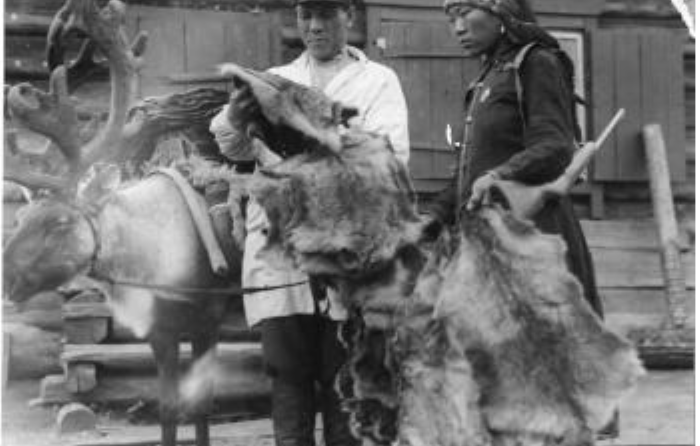
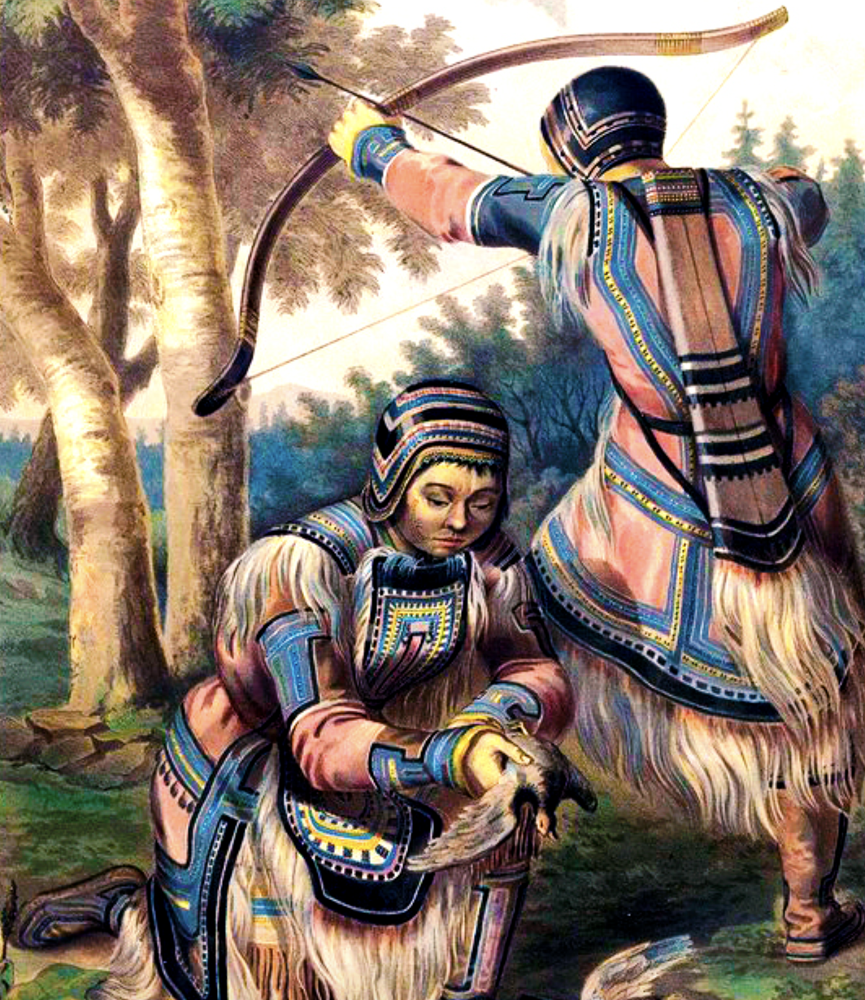
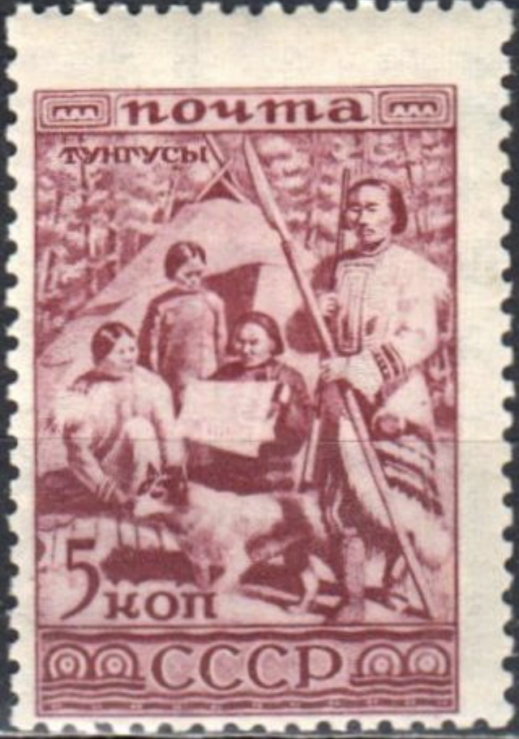

Эвенки говорят на эвенкийском языке, который принадлежит к тунгусо-маньчжурской группе алтайской языковой семьи. Язык имеет три группы диалектов: северную, южную и восточную. Каждая группа диалектов подразделяется на различные говоры.
Эвенки говорят на эвенкийском языке, который принадлежит к тунгусо-маньчжурской группе алтайской языковой семьи. Язык имеет три группы диалектов: северную, южную и восточную. Каждая группа диалектов подразделяется на различные говоры.
Основными составляющими быта эвенков являются охота и оленеводство. Охотничьи традиции занимают центральное место в этнографическом комплексе этого народа. Оленеводство также играет важную роль, позволяя эвенкам освоить горно-таежные ландшафты и увеличить мобильность благодаря верховой езде.
Культурные традиции эвенков основаны на экологическом восприятии мира как органичного единства всех объектов природы. Эвенки считают, что все объекты и явления окружающего мира обладают душой. Их обычаи направлены на бережное отношение к природе, стремление к гармонии между человеком и окружающим миром.
У эвенков существует система правил и запретов, известная как Одё, которая регулирует хозяйственную деятельность. Кроме того, существует кодекс морально-нравственных требований, называемый Иты, который регулирует жизненный путь и совершенствование личности. Обрядовые традиции являются формой соблюдения законов и правил этного сообщества, включая важный закон Нимат, связанный с соблюдением справедливости в распределении добычи.
|  |  |  |